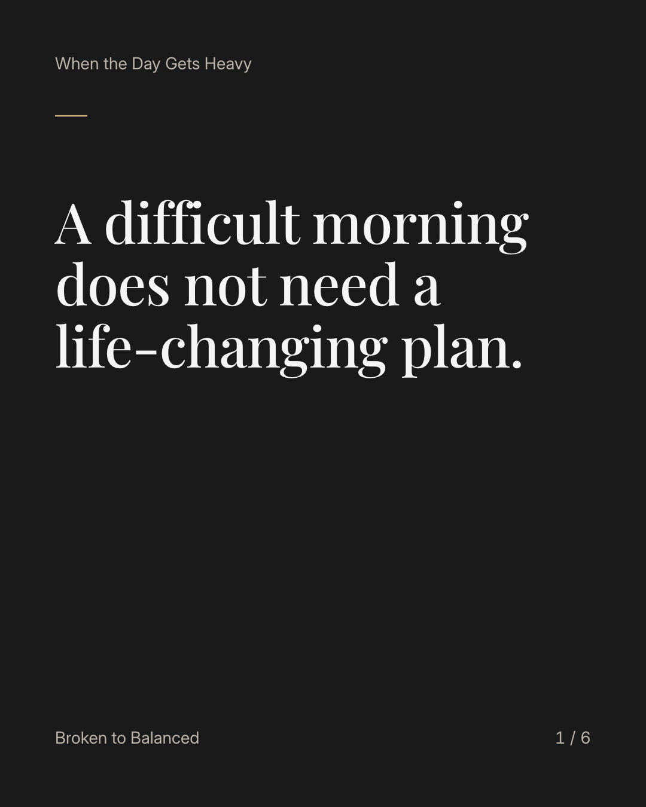
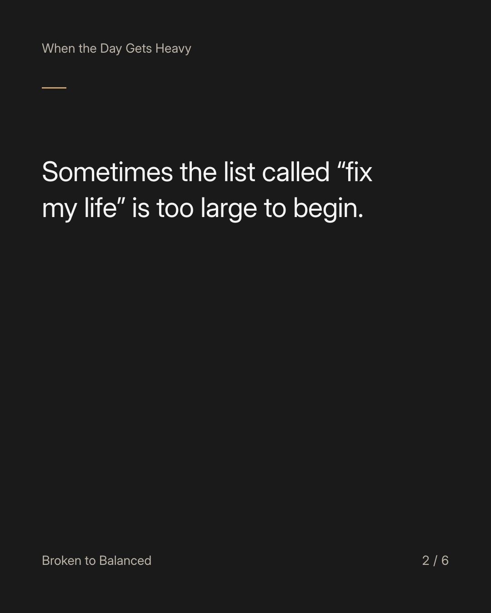
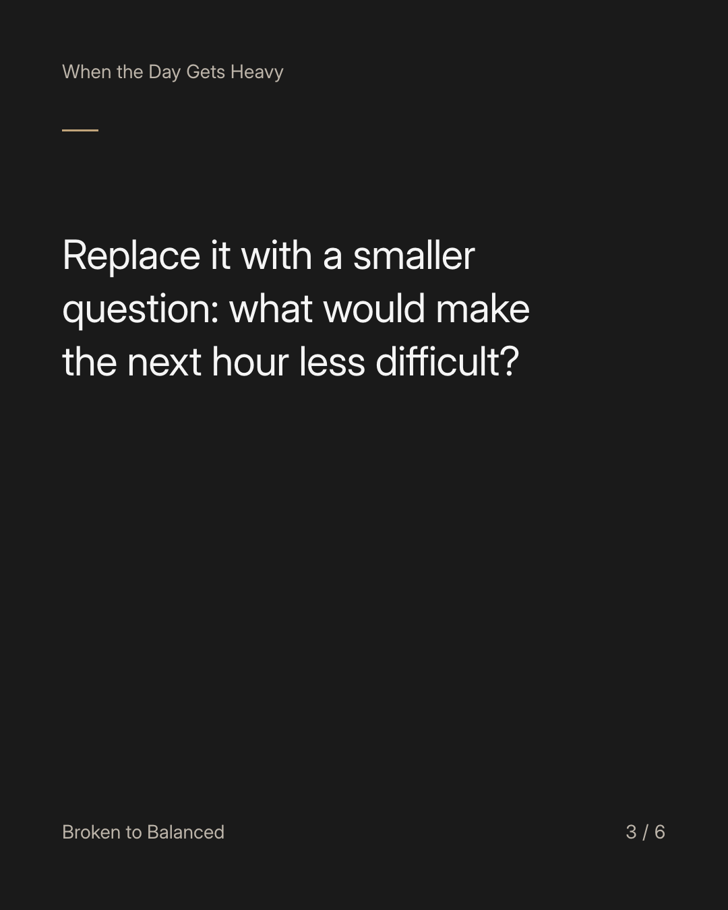
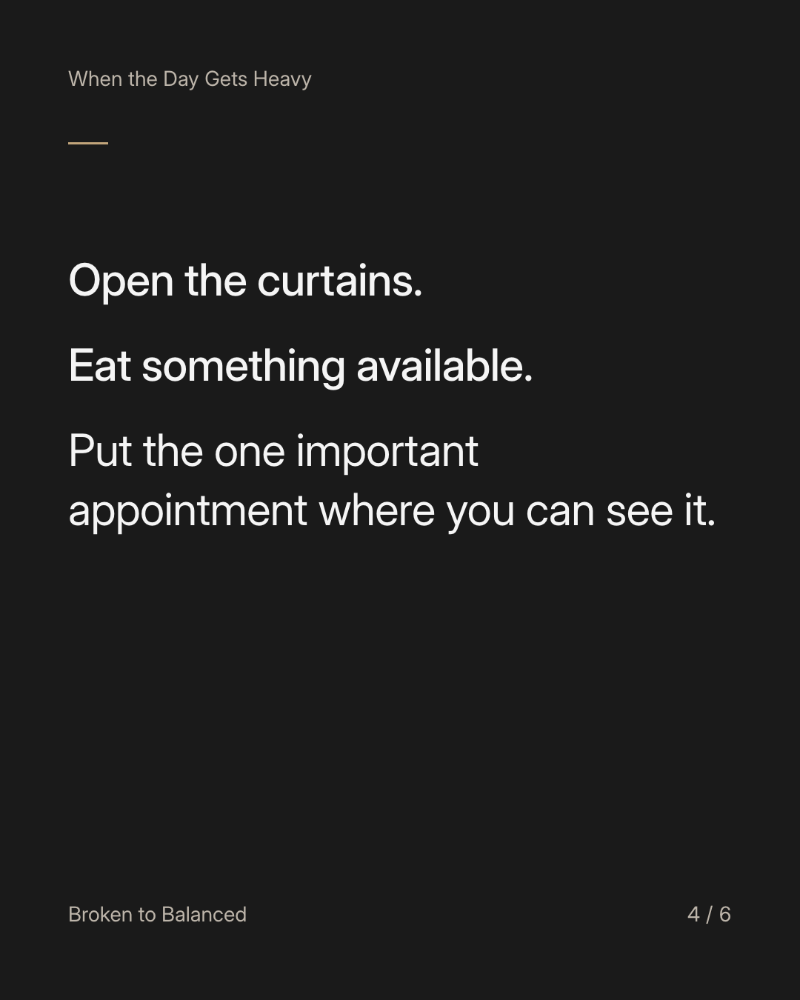
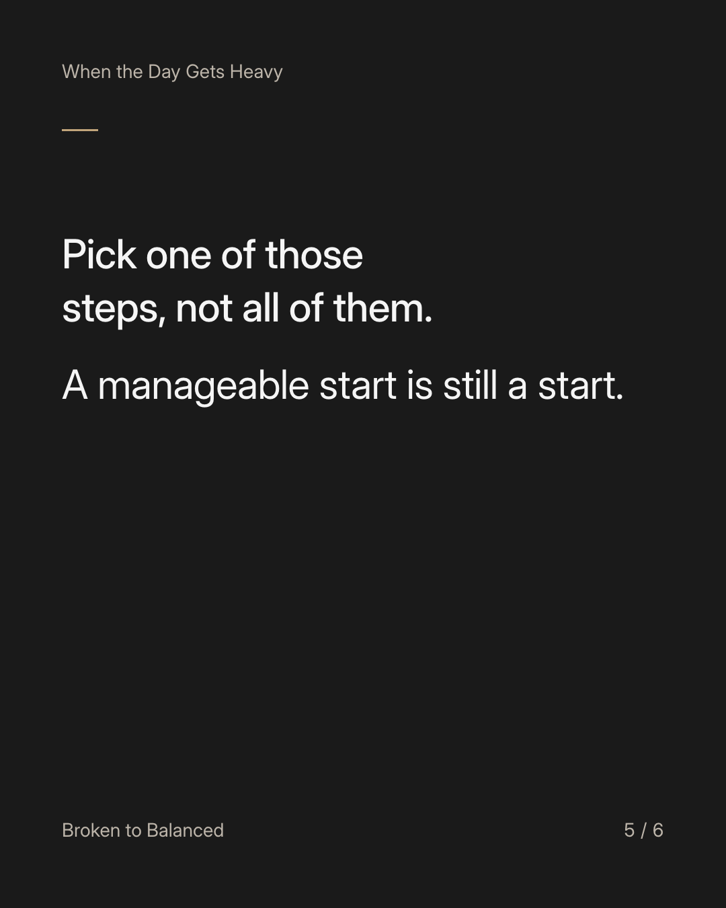
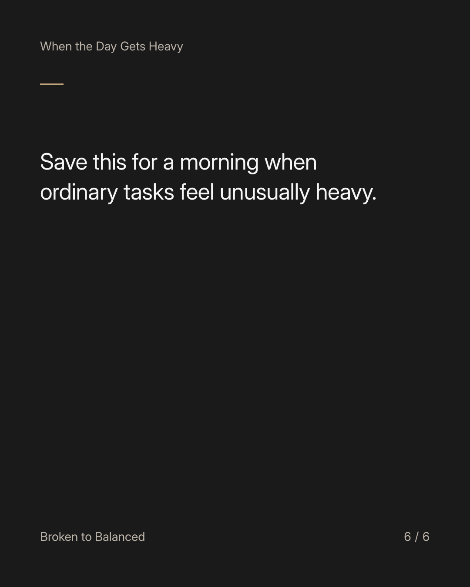

Exact text and accessibility text
A difficult morning does not need a life-changing plan.
Slide 1 of 6. A difficult morning does not need a life-changing plan.


Exact text and accessibility text
Sometimes the list called “fix my life” is too large to begin.
Slide 2 of 6. Sometimes the list called “fix my life” is too large to begin.


Exact text and accessibility text
Replace it with a smaller question: what would make the next hour less difficult?
Slide 3 of 6. Replace it with a smaller question: what would make the next hour less difficult?


Exact text and accessibility text
Open the curtains. Eat something available. Put the one important appointment where you can see it.
Slide 4 of 6. Open the curtains. Eat something available. Put the one important appointment where you can see it.


Exact text and accessibility text
Pick one of those steps, not all of them. A manageable start is still a start.
Slide 5 of 6. Pick one of those steps, not all of them. A manageable start is still a start.


Exact text and accessibility text
Save this for a morning when ordinary tasks feel unusually heavy.
Slide 6 of 6. Save this for a morning when ordinary tasks feel unusually heavy.
Exact caption
Plain-text fallback: select and copy the caption.